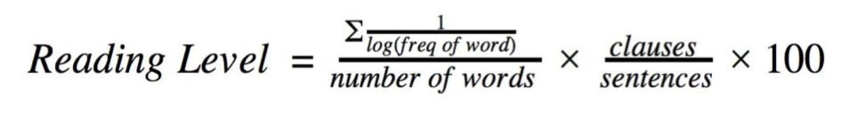

Personal Website
Improving Reading Level Evaluations Using Sentence Structure and Word Frequency
Summary:
During my senior year of high school, I conducted a research project of my own design from start to finish. I analyzed the reading levels of different texts using a formula that I created (details and justifications in paper):
I used the Oxford English Dictionary API for the frequencies of words in modern English and the Web-based L2 Syntactic Complexity Analyzer created by Haiyang Ai to count the number of clauses found in a given body of text. I created a website with Python/CherryPy as the backend (demo in video below) for users to be able to input their own text and see how my analysis compares to traditional ones.
Abstract:
People have been using readability formulas, or reading level formulas, for a wide variety of uses for many years. These formulas usually depend on factors like the number of characters, words, sentences, syllables per word, etc. there are in a sample of text. I created a formula which relies on the number of clauses in a sentence, which indicates the sentence complexity, as well as the vocabulary difficulty, which is based on the frequency of the words in modern English. In addition, I created a scale to go along with my formula so a user can see where their text falls with respect to other, more well-known texts.